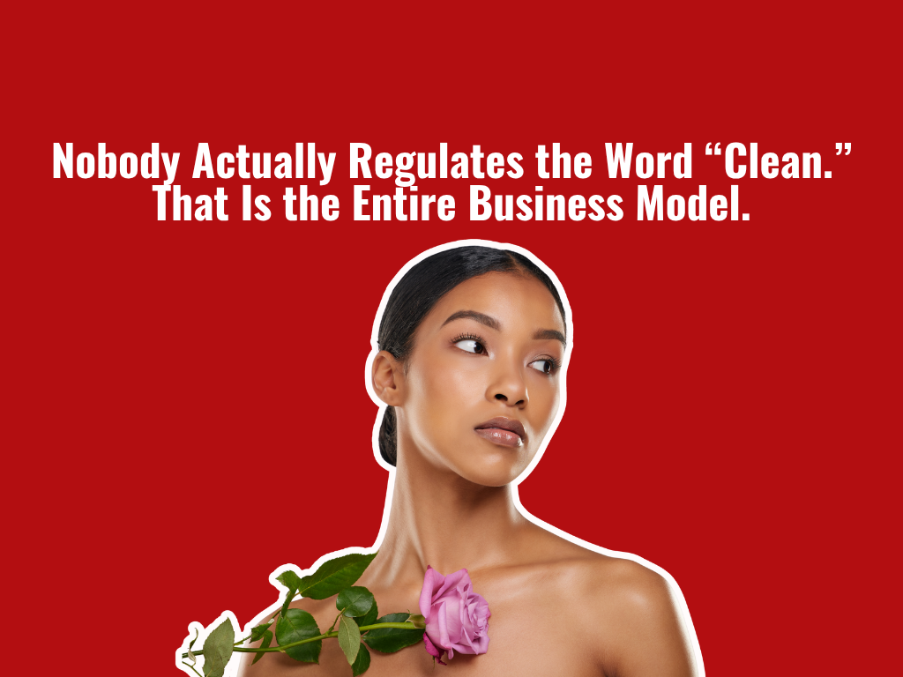
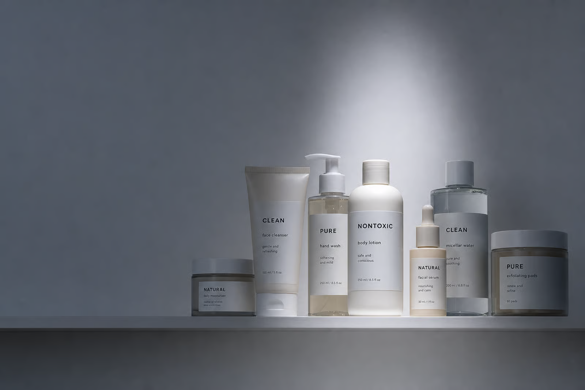
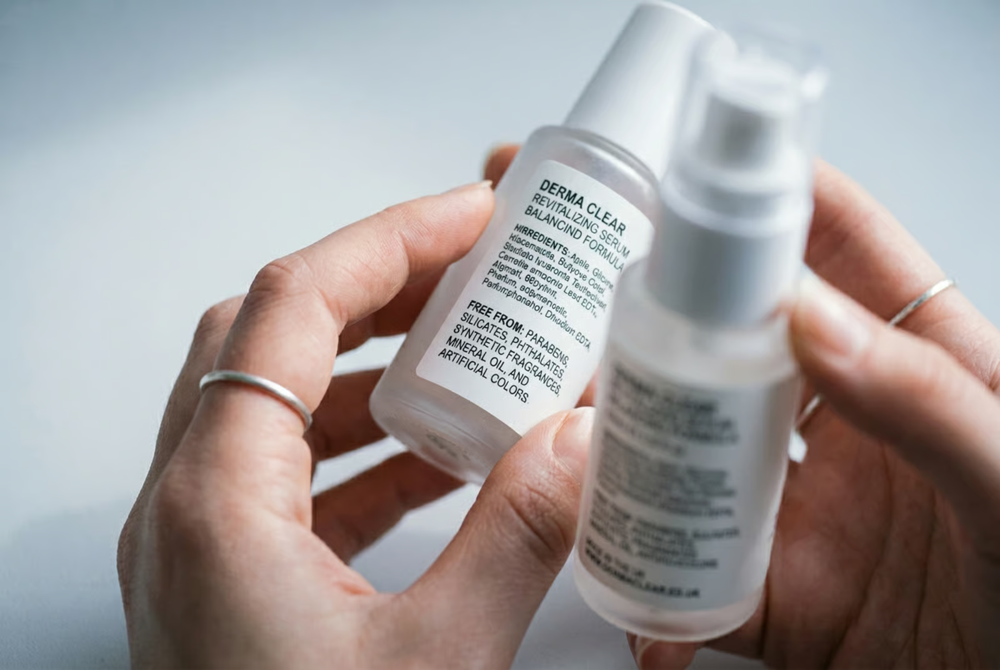

“Clean.” “Natural.” “Nontoxic.” “Free from.” The beauty industry's favorite words mean almost nothing, and that is exactly why they are everywhere.
I spent nine years on the inside of this industry, and I can tell you the single most profitable word in beauty is one that has no legal definition at all.
That word is “clean.” Walk into any store, scroll any beauty page, and you will see it stamped across serums, shampoos, moisturizers, and makeup like a badge of honor. It sounds like a promise. It sounds like someone, somewhere, checked.
Nobody checked. There is no government agency, no standards board, no agreed list that decides what “clean” means.
A brand can print it on a bottle on a Tuesday because the marketing team liked how it looked. Same goes for “natural,” “nontoxic,” “pure,” and “chemical free.” That last one is my personal favorite, because everything is a chemical. Water is a chemical. The air you are breathing right now is chemicals. These words exist for one reason. They make you feel something, and feeling is what sells.
The Trick Is Fear, and It Works Beautifully
Here is how the script actually works. First you convince people that ordinary, well studied ingredients are dangerous. Then you sell them the “free from” version at a markup. The fear does all the heavy lifting. You have seen the labels a hundred times: free from parabens, free from sulfates, free from silicones, free from whatever the internet decided to panic about that year.
Most of those ingredients were doing a real job, and doing it safely, for decades. Parabens are one of the most studied preservatives we have, used in tiny amounts to stop your moisturizer from growing mold and bacteria. When a brand yanks them out to chase a “clean” label, it has to replace them with something, and sometimes that something is newer, less tested, and more irritating. But it polls well with shoppers, so onto the bottle it goes.

“Clean,” “pure,” “nontoxic,” “natural”: four words on one shelf, and not one of them has a legal definition.
“Natural” Is Not the Same as “Safe,” and the Industry Knows It
This is the part that really gets me, because it is sold completely backwards.
Poison ivy is natural. Lead is natural.
Plenty of botanical extracts and essential oils are far more likely to wreck a sensitive face than the lab made ingredients they are marketed against. Ask any dermatologist what causes the allergic reactions they see, and essential oils will be near the top of the list.
Meanwhile the word “synthetic” gets treated like an insult, when synthetic often means purer, more stable, and easier to test. A lab made ingredient can be produced the exact same way every single time. A plant does not care about your batch consistency. But “made in a lab” feels cold and “straight from nature” feels safe, so the marketing writes itself and the actual science gets left at the door.
Follow the Money, Because There Is a Lot of It
Clean beauty is not a moral movement. It is a market category, and a giant one. The whole thing runs on a single feeling: that the product you already own is secretly hurting you, and the more expensive one will save you. That feeling is worth billions of dollars a year.
It also lets a brand charge more for less. Strip out a few cheap, effective ingredients, add a botanical that sounds nice, print “clean” on the front, and you can double the price while spending less on the formula. The customer thinks she is buying safety. She is buying a story, and stories have fantastic margins.
What I Actually Tell My Friends to Do
I am not saying every clean brand is lying or that every product is fine. Some of these brands make genuinely lovely things. The point is that the word on the front of the bottle tells you nothing, so stop letting it make the decision for you.

A “free from” label tells you what a product leaves out, not whether what is left actually works. Read the ingredient list, not the marketing.
Read the ingredient list, not the marketing. If you have sensitive or reactive skin, added fragrance and essential oils are far more worth avoiding than parabens ever were. Be suspicious of any product that sells itself mostly on what it does not contain, because that is usually a sign the brand would rather talk about fear than results. And know that “dermatologist tested” and “clinically proven” are loose phrases too, and often mean very little.
The honest version of beauty is kind of boring. It is ingredients that work, used at the right concentration, in a formula that does not fall apart on the shelf. It does not need a scary story to justify the price. In my experience the brands shouting “clean” the loudest are usually the ones with the least to actually say.